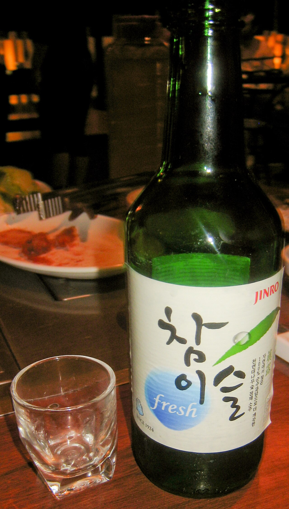
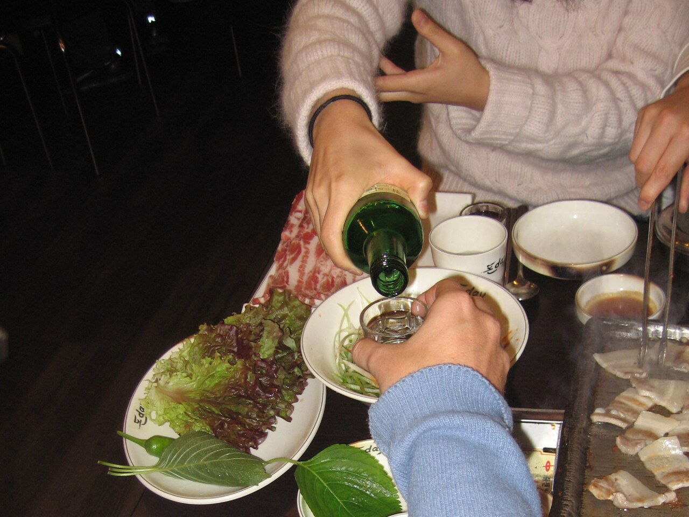
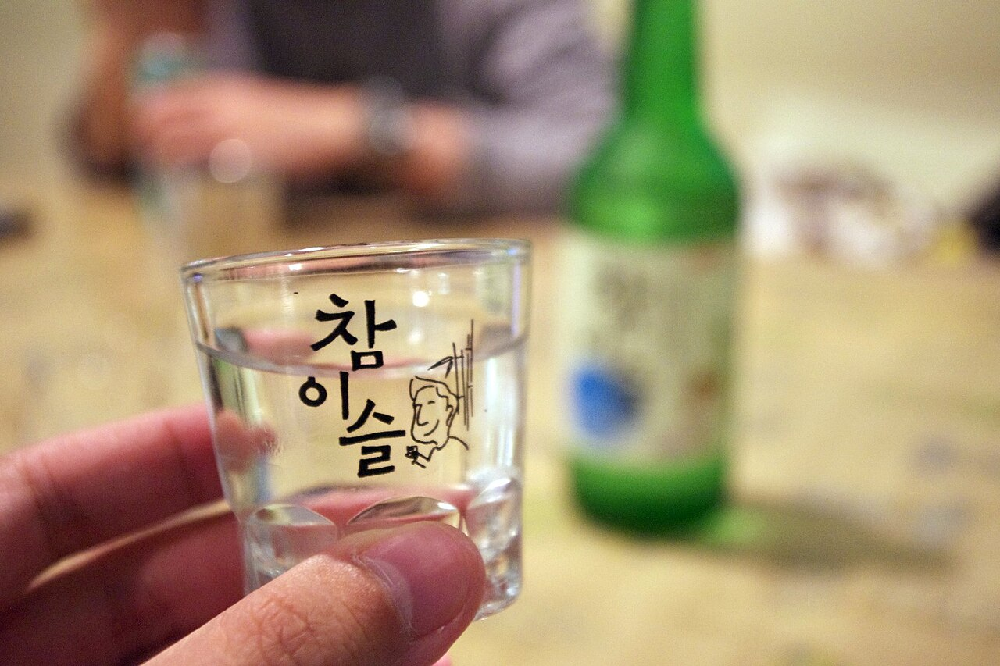
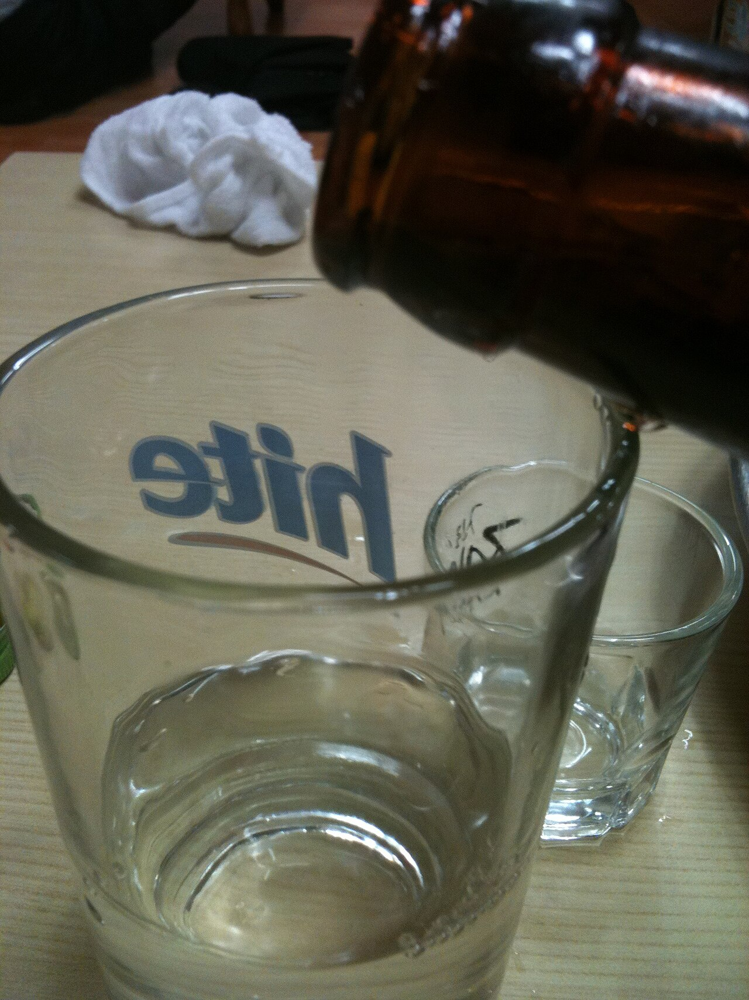
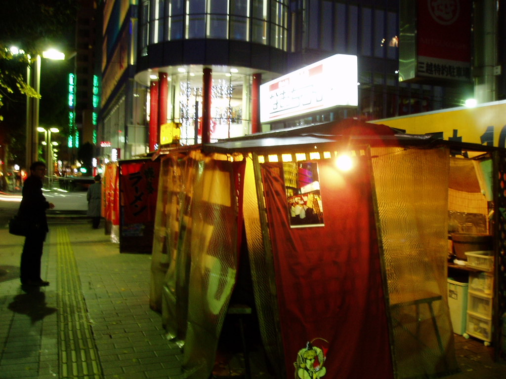
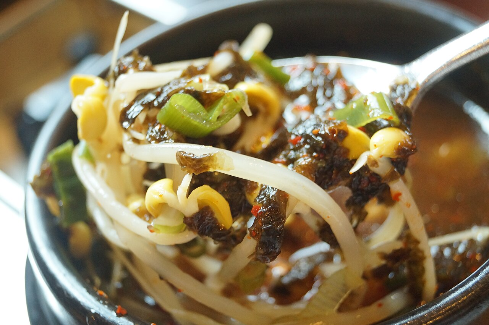
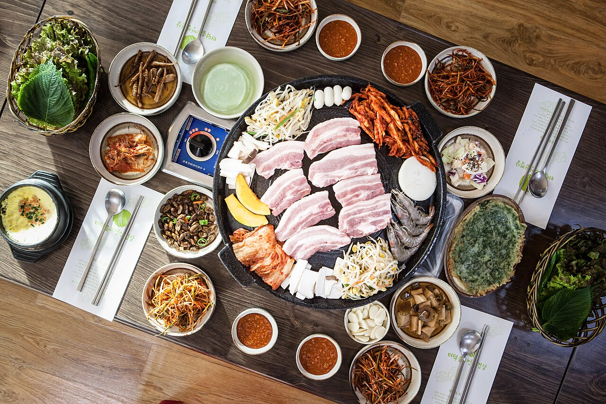
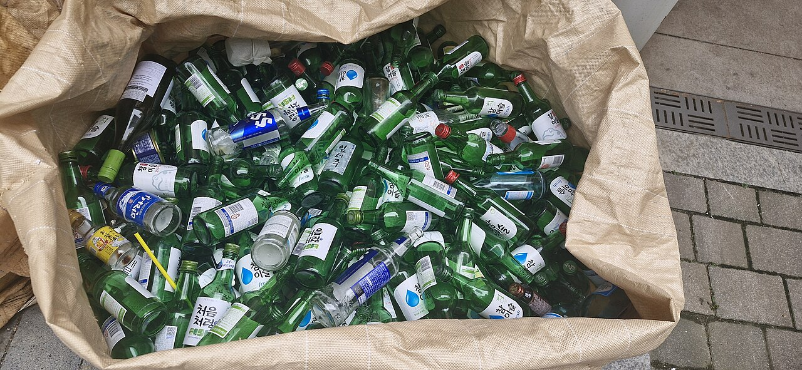

밤 10시, 신촌 시장을 여는 사람들
늘 가는 그 집이다. 첫 잔은 다 같이 든다. 안주는 먼저 온 사람이 고르고, 소주는 한 사람에 반 병으로 시작한다. 여기서 배를 채워야 뒤가 편하다.

11월 11일 수요일 밤 10시, 신촌 ‘시장을 여는 사람들’. 소주를 제대로 마시는 사람들이 모인다.
나도 간다술존좋사는 술을 존나게 좋아하는 사람들의 모임이다. 많이 마시는 모임이 아니다. 첫 잔이 목을 넘어가는 순간, 삼겹살 기름을 씻어내는 둘째 잔, 국물 한 숟갈 뒤에 오는 셋째 잔을 좋아하는 사람들이다. 한국에서 술이라고 하면 대개 소주다. 우리도 그렇다. 그래서 천천히 마신다. 안주를 먼저 고르고, 잔을 비우는 속도는 잔 주인이 정하고, 집에 간 길은 다음 날 아침에도 기억한다.

취하려고 마시는 사람은 금방 그만둔다. 끝까지 남는 건 맛으로 마시는 사람이다.
소주 한 병은 소주잔으로 일곱 잔이다. 둘이 마셔도 셋이 마셔도 딱 떨어지지 않는다. 그래서 한 병을 더 시킨다.
16°

하룻밤은 네 장으로 되어 있다. 어느 장에서 일어나도 되고 끝까지 가도 된다. 다만 순서는 바꾸지 않는다.
밤 10시, 신촌 시장을 여는 사람들
늘 가는 그 집이다. 첫 잔은 다 같이 든다. 안주는 먼저 온 사람이 고르고, 소주는 한 사람에 반 병으로 시작한다. 여기서 배를 채워야 뒤가 편하다.
자정 무렵, 근처 맥줏집
자리를 옮기고 싶은 사람만 옮긴다. 소주 3에 맥주 7로 한 잔씩 말고, 그다음부터는 각자 생맥주다. 여기서 집에 가는 사람이 제일 현명하다.

새벽 1시 반, 포장마차
남은 사람만 간다. 우동 국물 하나에 소주 한 병을 나눈다. 막차는 이미 끊겼으니 택시비부터 확인한다. 운전은 누구도 하지 않는다.

다음 날 아침, 각자 동네에서
콩나물국밥에 수란 하나, 물은 큰 컵으로 두 잔. 해장술은 해장이 아니다. 국밥 사진을 보내면 끝까지 간 것으로 친다.

소주잔으로 재지 않는다. 맥주잔 하나를 열 칸으로 보고 소주를 몇 칸 채울지만 정한다. 소주 16도, 맥주 4.5도 기준이다. 손잡이를 밀면 잔이 다시 채워지고 도수가 나온다.
소주 3칸 60ml, 맥주 7칸 140ml
3:7

회칙 첫 줄이다. 잔을 비우는 속도는 잔 주인이 정한다. 억지로 권한 사람이 그 자리 술값을 낸다.
한 모금이라도 마셨으면 대리나 택시다. 차를 가져온 사람에게는 처음부터 사이다를 준다. 여기에는 예외를 두지 않는다.
소주 한 병에 물 한 병. 탁자마다 물병부터 놓고 시작한다. 다음 날 아침이면 이 줄을 쓴 사람이 고마워진다.
필름이 끊겼다면 술을 좋아한 게 아니라 술에 진 것이다. 어제 무슨 얘기를 했는지 말할 수 있을 만큼만 마신다.

이번에는 11월 11일 수요일 밤 10시, 신촌 ‘시장을 여는 사람들’이다. 가게 안에서 바로 만난다. 장소는 늘 같고 날짜는 그때그때 정한다. 늦어도 된다. 와서 앉으면 된다.
가입 절차가 없다. 와서 첫 잔을 같이 들면 회원이다. 명부도 회장도 탈퇴도 없다.
없다. 그날 영수증을 그 자리에 있던 사람 수로 나눈다. 1차만 하고 일어나면 1차 값만 낸다. 술을 안 마신 사람은 안주값만 낸다.
된다. 좋아하는 것과 잘 마시는 것은 다른 일이다. 사이다로 건배해도 되고 한 잔으로 세 시간을 버텨도 된다. 남의 잔을 세는 사람은 없다.
괜찮다. 탁자는 길고 자리는 섞어 앉는다. 처음 온 사람이 첫 건배사를 한다. 길 필요는 없다. “반갑습니다”면 충분하다.
만 19세부터다. 처음 오는 날에는 신분증을 가져온다.
정해진 끝은 없다. 밤 10시에 시작하니 1차만 해도 자정이다. 어디서든 일어나면 그게 끝이다. 붙잡는 사람은 회칙 첫 줄을 다시 읽는다.
‘혼자 간다’는 지도를 열고, ‘친구도 부른다’는 초대 문구를 복사한다. 신청은 어느 쪽에도 없다. 11월 11일 수요일 밤 10시, 신촌 시장을 여는 사람들.